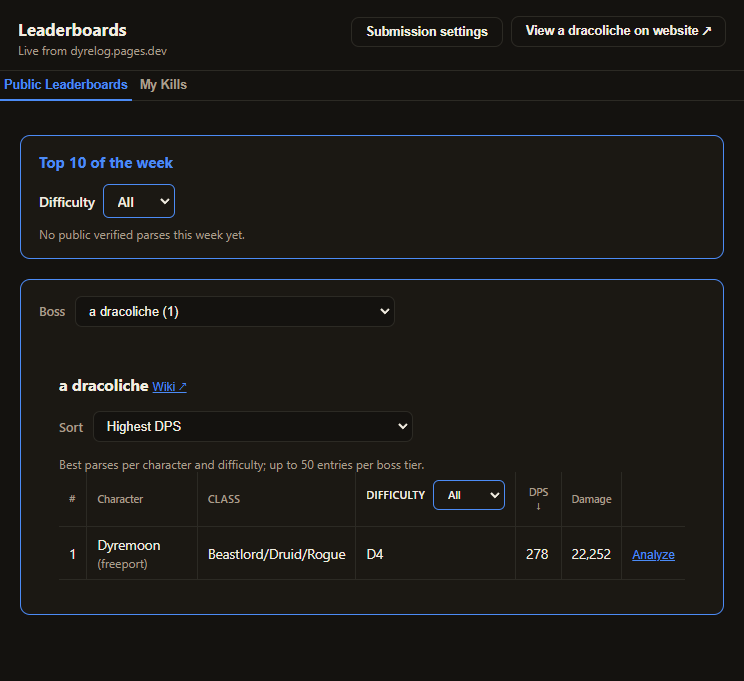
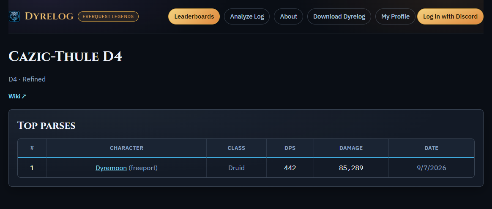

About Dyrelog
I started Dyrelog because I didn't see DPS meters that really clicked with me and my quirky sense of style. I tend to like a specific type of dps meter, so I thought I'd just make my own. There are some incredible options out there, but often times they have much more functionality than I need, and I get overwhelmed when there's too much data and information at my disposal. So I made something that just did DPS, Analytics, and Leaderboards, and did it really well.
In real life I'm just a guy who used to work in the game industry, and now I'm a software engineer. I enjoy building projects, fixing problems, and helping others. I've been playing MMOs my whole life, just like most of us here, and I took inspiration from DPS meters from other games so that Dyrelog feels familiar and easy to pick up. I have never made a leaderboard system before, so added a fun leaderboard for us all to track our DPS on if we so choose as a personal project to see what I could do. Of course with the help of Claude Code to guide me through the sticky areas.
This is a fan project, built and maintained by one person in his spare time and not an official tool, nor affiliated with Daybreak Game Company or EverQuest Legends.
What's included
There's the standard bars, a mini-mode for minimalists, and a circle for weirdos who like circles. There's also a deep-dive analysis tool and a leaderboard system for fun, and just to compare against everyone else who chooses to upload their boss kill logs.
Leaderboards
See how your parses stack up against everyone else on the same boss, in the overlay while you play or on the website.


Feedback
If you've found a bug or want to submit some feedback, please go ahead and submit an issue on GitHub and I'll review it as soon as I can.
Report a bug or suggest a feature ↗Credits
Boss and zone data draws on research from these community sites, run by people who've spent years documenting this game. None of them are affiliated with Dyrelog. Thank you to all the incredible community members who care about the game and each other.